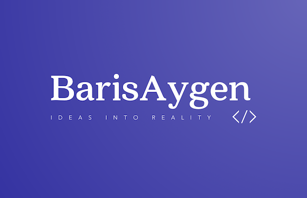

About Me
I am a software developer with a strong interest in building creative and functional applications. I focus mainly on full-stack development, game development, and integrating AI technologies into real-world projects. I studied Computer Science and Engineering at Sabancı University, where I also worked as a research and teaching assistant. Now I am doing my master's degree in Computer Science at the Technical University of Berlin. I enjoy working on projects that connect technology with user experience, and I am especially interested in using AI to make systems smarter and more adaptive.